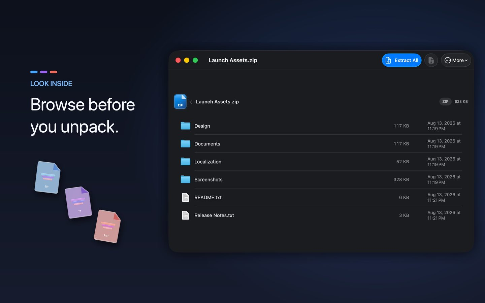
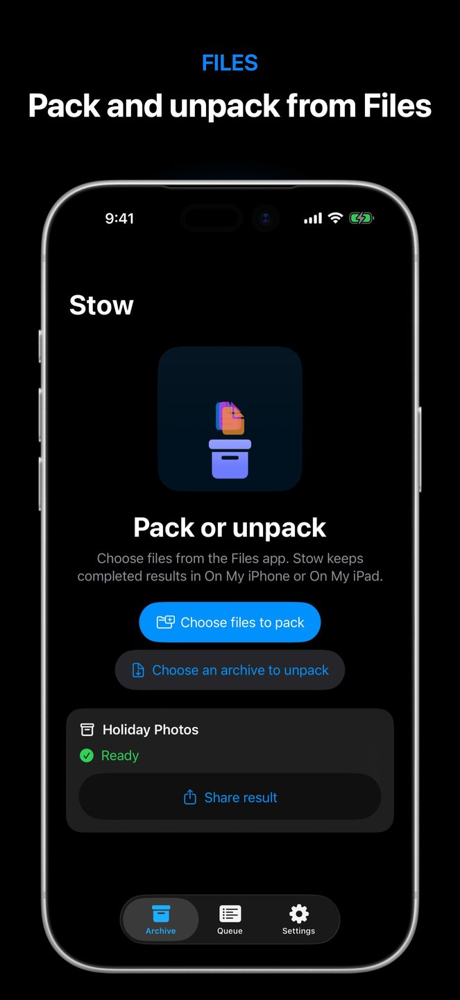
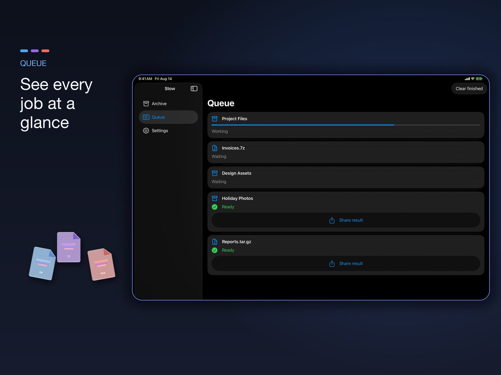

SAFE
Protection against zip bombs
On Mac, Stow limits archive expansion and item counts, validates paths and links, and stages files before they reach your destination.
Archive utility for Apple devices
Stow makes everyday archive work feel calm and deliberate. Mac gets the complete archive toolkit. iPhone and iPad stay focused on the Files workflows you need on the move.
One purchase. No account. No tracking.



Everything in its place
Stow keeps the common path simple, then gives you the control you need when a file deserves more care.
On Mac, Stow limits archive expansion and item counts, validates paths and links, and stages files before they reach your destination.
Create archives from files or folders, then extract them with the right destination and options already in view.
Look inside an archive on the Mac before it changes your disk. Preview its structure, then extract only what you need.
Create ZIP and 7z archives with AES-256 passwords. 7z can also encrypt the list of file names.
Queue several jobs, create SHA-256 checksums, and split large archives into smaller volumes.
Create SHA-256 checksum files and split a large archive into smaller volumes for easier transfer.
Create ZIP, 7-Zip, TAR and common compressed TAR formats. Open a broad range of archive files.
Mac
Drop something on Stow and it knows the next sensible move. The Mac app also gives you the complete archive toolkit when the job needs more than a quick ZIP.


iPhone and iPad
Mobile Stow is a focused companion for packing and unpacking the files already on your device.
A deliberate scope
Mac has the full archive workstation. Mobile stays fast and focused on file workflows that make sense on a touch device.
A quieter way to archive
Stow is built for the routine transfer, the careful backup, and the archive you want to understand before opening.
View on the App Store